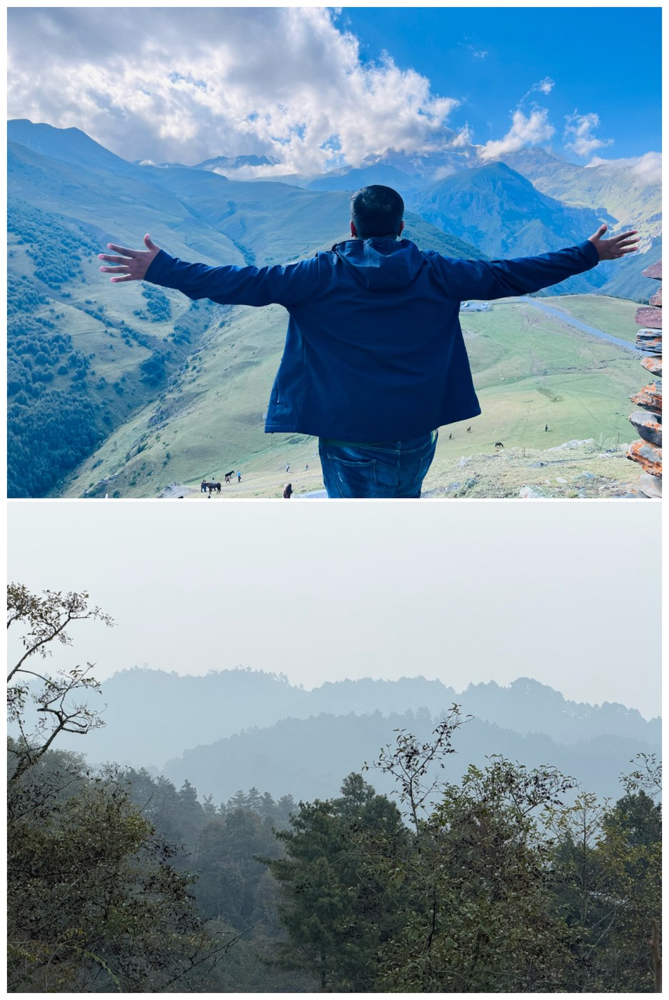
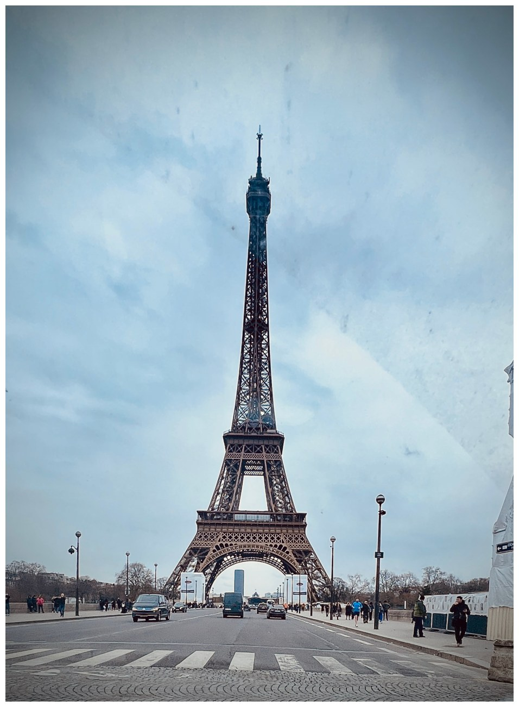
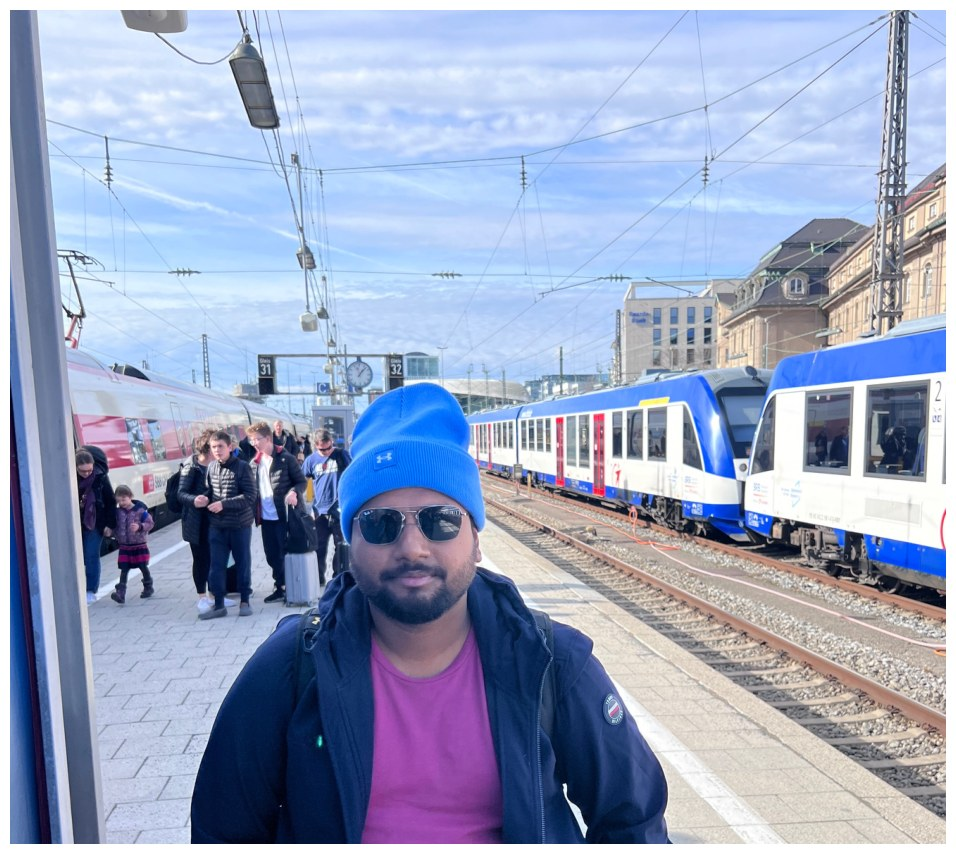
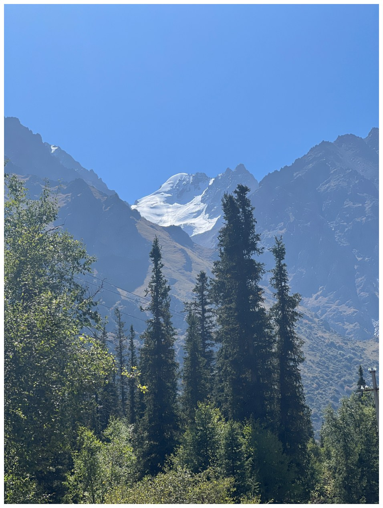
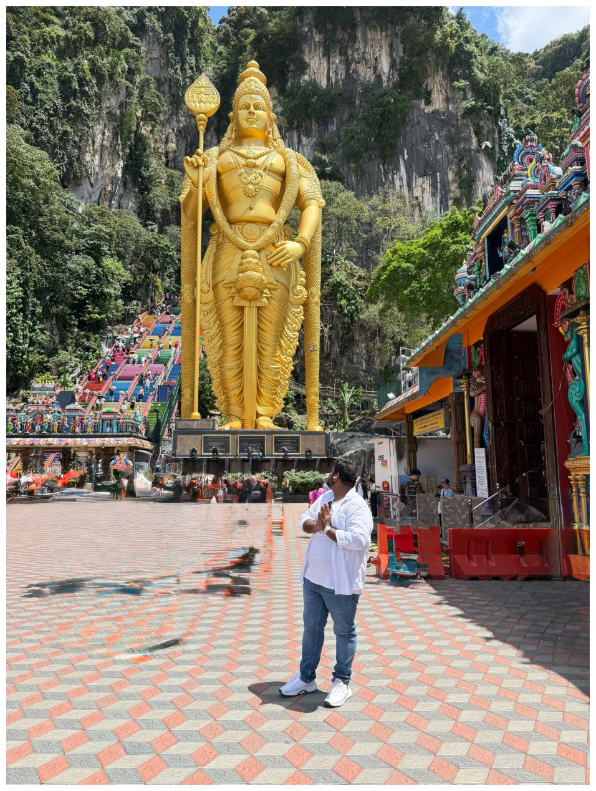

A short introduction
Building with
purpose.
Living with curiosity.
An engineering and operations professional with a people-first approach — and a traveller at heart.

FIELD NOTES 01
My background
Experience that
keeps things moving.
My career has taken me through engineering, technical service and operations roles across India and the Gulf. I enjoy bringing people, priorities and practical solutions together.
What I bring
Clear thinking.
Consistent delivery.
Learning journey
Growing through
learning and practice.
I value learning that can be applied — from planning and leadership to communication, delivery and continuous improvement.
Beyond the desk
The world is
my open notebook.
I love low-budget, independent travel: new streets, train stations, mountains, local culture and the people you meet along the way.




Keep in touch
Good things start
with a conversation.
For professional connections, collaboration or a friendly exchange of ideas.
saianveshmech@gmail.com ↗